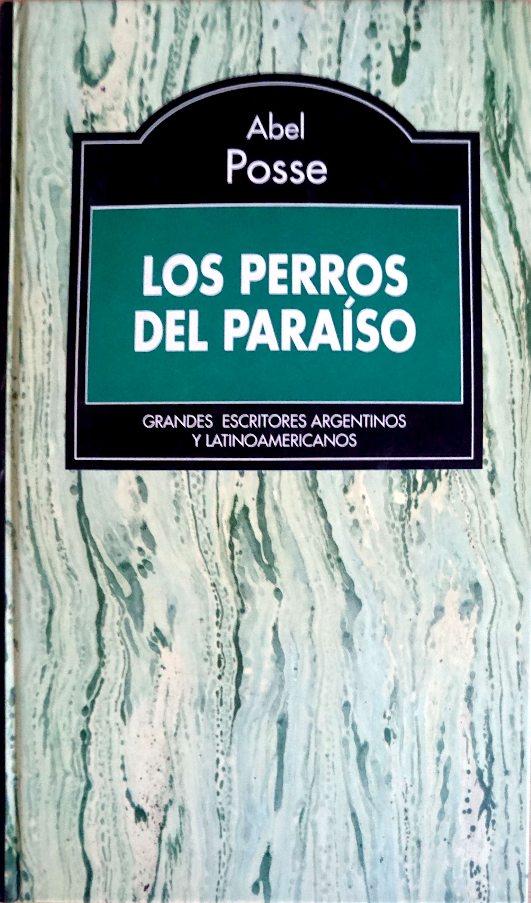

Los perros del paraiso
Los perros del paraíso constituye un viaje por la historia secreta del descubrimiento de América. Desde la ardiente pasión de Fernando e Isabel, que se adueñan de España en plena adolescencia, transformando el poder en diablura erótica, hasta esa iniciática "conspiración del paraíso", cuyo agente será Colón, realmente convencido de que América era la patria del expulsado Adán.
Referencias
- http://abelposse.com/book/los-perros-del-paraiso/
- Avanza Noveno 9